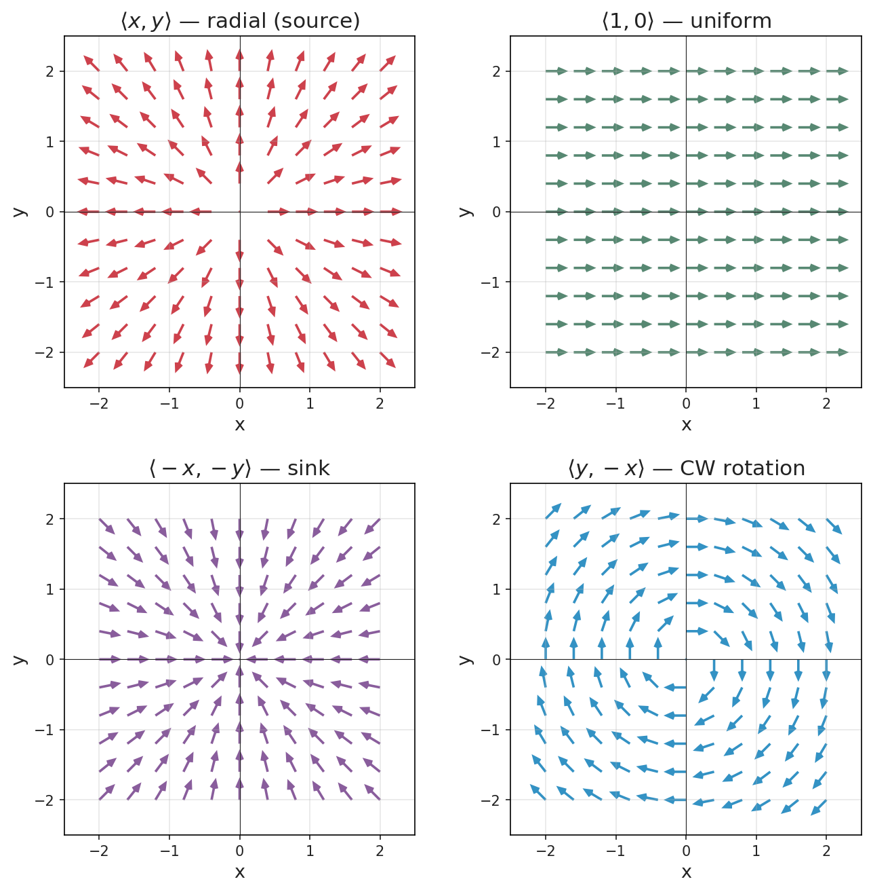

Section 16.1: Vector Fields
Vector Calculus
MTH 310
Calculus III
From Scalar Fields to Vector Fields

A scalar field assigns a number to each point. A vector field assigns a vector to each point.
Definition of a Vector Field
Vector Field (2D)
\[\vec{F}(x,y) = \langle P(x,y),\; Q(x,y) \rangle\]
Vector Field (3D)
\[\vec{F}(x,y,z) = \langle P(x,y,z),\; Q(x,y,z),\; R(x,y,z) \rangle\]
The functions \(P\), \(Q\), \(R\) are the component functions — ordinary scalar functions that give each component of the vector at each point.
Example 1: Plot a Vector Field
Example 1
Plot the vector field \(\vec{F}(x,y) = \langle -y, x \rangle\) by evaluating \(\vec{F}\) at several points and drawing the vectors.

At \((1, 1)\): \(\vec{F} = \langle -1, 1 \rangle\). Draw an arrow from \((1,1)\) pointing left and up.
Now you try:
- At \((1, 0)\): \(\vec{F} = \langle\; ?\;,\; ?\; \rangle\)
- At \((0, 1)\): \(\vec{F} = \langle\; ?\;,\; ?\; \rangle\)
- At \((-1, 0)\): \(\vec{F} = \langle\; ?\;,\; ?\; \rangle\)
- At \((2, 0)\): \(\vec{F} = \langle\; ?\;,\; ?\; \rangle\)
\(\langle 0, 1 \rangle\), \(\langle -1, 0 \rangle\), \(\langle 0, -1 \rangle\), \(\langle 0, 2 \rangle\). Do you see a pattern forming?
Exploring 2D Vector Fields

with arrows circling counterclockwise around the origin. Top-right: the radial field F =Radial field: \(\langle x, y \rangle\) — every arrow points away from the origin. A source.
Uniform field: \(\langle 1, 0 \rangle\) — identical arrows everywhere. A constant wind.
Sink field: \(\langle -x, -y \rangle\) — every arrow points toward the origin.
Clockwise rotation: \(\langle y, -x \rangle\) — the mirror image of Example 1.
Vector Fields in 3D
Try it: \(\langle x, y, -z \rangle\) — a “fountain” field. Water flows outward from the center and falls back down.
Physics examples:
- Gravity: \(\displaystyle\vec{F} = -\frac{mMG}{|\vec{r}|^3} \vec{r}\) (points toward mass, inverse-square)
- Electric field: \(\displaystyle\vec{E} = \frac{q}{|\vec{r}|^3} \vec{r}\) (same structure, points away from \(+\) charge)
Gradient Fields and Conservative Vector Fields
Gradient Field / Conservative Vector Field
A vector field \(\vec{F}\) is called a gradient field (or conservative) if there exists a scalar function \(f\) such that:
\[\vec{F} = \nabla f = \langle f_x,\; f_y \rangle \qquad\text{(or } \langle f_x, f_y, f_z \rangle \text{ in 3D)}\]
The function \(f\) is called a potential function for \(\vec{F}\).
Why “conservative”? A conservative force does zero net work around any closed path. Gravity is conservative — energy spent going uphill is recovered coming back down.
Not every vector field is conservative. A big question in Chapter 16: which fields are conservative, and how can we tell?
Example 2: Verify a Gradient Field
Example 2
Show that \(\vec{F}(x,y) = \langle 2xy + 3,\; x^2 - 4y \rangle\) is a gradient field by finding a potential function \(f\).
How Gradient Fields Look Different
Gradient field (\(\vec{F} = \nabla f\)): arrows are perpendicular to level curves of \(f\), pointing from low to high values. No swirling — a leaf dropped in the flow moves but never spins.
Non-gradient field: arrows can form closed loops, swirl, or rotate. The rotation field \(\langle -y, x \rangle\) from Example 1 is the classic case.
Visual test: If a vector field has arrows forming closed loops, it is not conservative. Conservative fields “flow downhill” from a potential function.